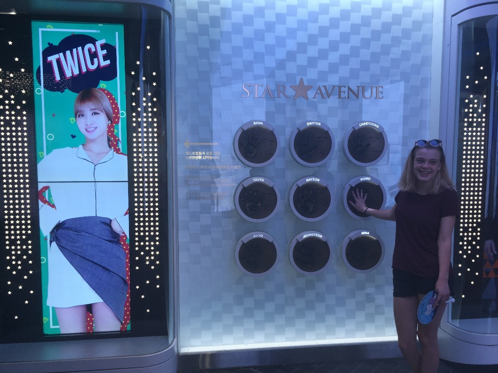
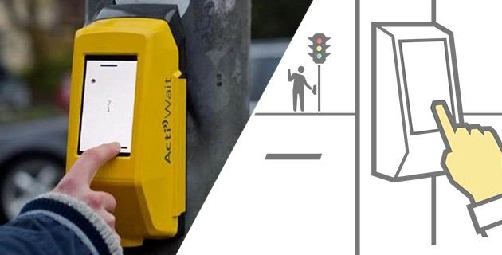
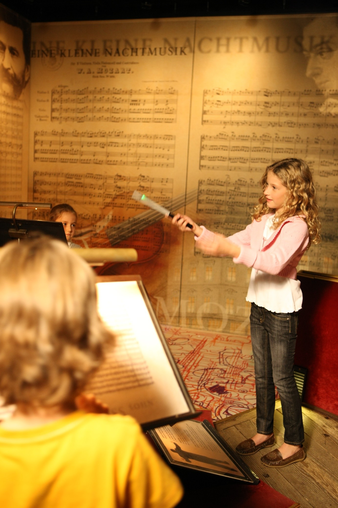

Research
Star Avenue Lotte
Gemaakt door: Lotte
Dit project is een soort gang met allemaal handafdrukken van bekende Koreanen. Eigenlijk vergelijkbaar met Hollywood’s walk of fame. Alleen hierbij is het interactief. Als je je hand vergelijkt met een van de idolen speelt er naast direct een filmpje af van dit idool.
Ik ben hier ook zelf geweest, en ik vind het een leuk idee om het interactief te laten zijn. Er komen denk ik hoe dan ook veel mensen op deze attractie af, maar door het interactieve is de ervaring leuker.
Interactive Crosswalk Video Game
Gemaakt door:Acti Wait
Dit project is als het ware gewoon een spelletje ping pong dat in de knop van een stoplicht zit, dit kan je dan spelen met degene aan de overkant. Eerst was dit gewoon bewerkt filmpje dat viral ging. Het was slechts een green screen, maar kan niet echt. Uiteindelijk is het nu echt gemaakt. Door het wachten aantrekkelijker te maken door een spelletje spelen, steken minder mensen de weg over als het stoplicht op rood staat. Ik denk dat dit heel goed zal gaan werken, aangezien het goed werkt tegen verveling als je staat te wachten op het stoplicht.
linkThe Virtual Conductor
Gemaakt door: Das Klangmuseum
Deze installatie staat in een museum in Wenen, Das Klangmuseum. Je hebt een stokje in je hand, en je bent de dirigent van het Weense filharmonisch orkest. Voor je neus is er een projectie, waar je het orkest ziet. Hoe hoger je het stokje vast houdt, hoe harder het orkest speelt en hoe sneller je beweegt, hoe sneller het orkest speelt. Ik denk dat het een hele leuke manier is om kinderen te leren hoe dirigeren werkt.
linkTinkering
Geluidsgolven
Deze demo deed me denken aan mijn wearable challenge. Ik had toen in de Serial Plotter een visualisatie van de geluidsgolven die binnen kwamen via mijn Sound Sensor. Ik had gezien op youtube dat je zoiets ook kan doen met processing, maar dan niet met een sound sensor, maar de microfoon van je laptop. Dus nadat ik een tutorial had gevolgd, heb ik verschillende vormen van hoe de geluidsgolven gevisualiseerd kunnen worden uitgeprobeerd. Zoals te zien is hieronder:
Mijn code
Muziek afspelen Processing
Tijdens het hoorcollege werd er benoemd dat je ook muziek kan afspelen met Processing. Ik wilde graag weten hoe dit moest, dus heb ik een tutorial gekeken over de verschillende mogelijkheden. Ik heb de processing.sound library gebruikt en heb verschillende functies gebruikt. Zoals file.amp, die verantwoordelijk is voor hoe hard het geluid afspeelt. Ik wilde proberen om dit te koppelen aan een pot meter, maar dit bleek vrij ingewikkeld te zijn. Toen heb ik mijn plan verandert. Het lijkt nu een beetje op opgave 4 van processing workshop. Als op de knop wordt gedrukt begint het nummer met spelen en stopt als je er nog een keer op drukt.
Mijn code
Capacative sensor grid
Ik kwam met het idee als je stroken alluminium folie over elkaar heen legt in een soort grid, dat je dan kan bepalen waar iemand opdrukt. Soort van touchscreen eigenlijk. Ik heb vier stroken over elkaar heen gelegd en ze verbonden met de arduino. Dan in de code aangegeven dat er in de serial monitor een letter moet worden aangegeven als twee stroken overlappen. Links bovenin is E, links onderin is F, rechts bovin is G en rechts onderin is H. Dit werkte niet vlekkenloos, want soms wordt er ook een letter gegeven terwijl er helemaal niet op gedrukt is, maar het gaf hoe dan ook wel de letter aan als je er op drukte.
Mijn code
Design & Build
Voor de laatste challenge heb ik een muziektijdlijn gemaakt als concept. Er zijn drie borden met een plaatje van een album en een jaartal. Als je het aanraakt, speelt de muziek af die bij het album hoort. Ik heb het bij drie albums gehouden en met de muziek die ik zelf leuk vind, maar dit idee kan natuurlijk ook met andere muziek gebruikt worden.
Dit past bij Playful Interaction, omdat de gebruiker het echt fysiek moet aanraken voordat de muziek afspeelt. Het muziekje duurt ook slechts een halve minuut en kan daarom snel door naar het volgende album.
Mijn Arduino code Mijn Processing code
Reflect
Ik vind Playful interaction een leuk onderwerp. Ik wist van tevoren niet echt wat het nou precies inhield, maar ik vind vooral het stukje playful erg leuk aan dit onderwerp. Ik denk dat het vooral goed werkt op educatief gebied, want je bied een soort ervaring aan en daar leer je meer van dan gewoon lezen uit een boek. Ik denk niet dat je dit in de toekomst overal tegenkomt, maar ik denk dat het zeker meer en meer in plekken zoals musea voor gaat komen.
Ik ben erg tevreden met mijn concept. Ik had dit idee al tijdens het hoorcollege, maar dacht eigenlijk eerst dat het te moeilijk zou zijn om te realiseren. Mijn orginele idee was dat je het moest blijven aanraken voor de muziek te laten spelen, maar in processing het signaal van de capacitive touch was niet dat betrouwbaar.
De technologie die ik heb gebruikt voor arduino, was niet veel lastiger dan wat ik al had gebruikt tijdens een van de workshops, dus dat ging me best goed af. Processing was een stukje lastiger. Ik wist door het tinkeren wel al hoe je muziek af moest spelen, maar een signaal sturen van arduino naar processing ging toch wat ingewikkelder dan ik had gedacht. Maar naar veel hebben gezocht op internet, ben ik er wel uitgekomen hoe ik dit kon aanpakken.